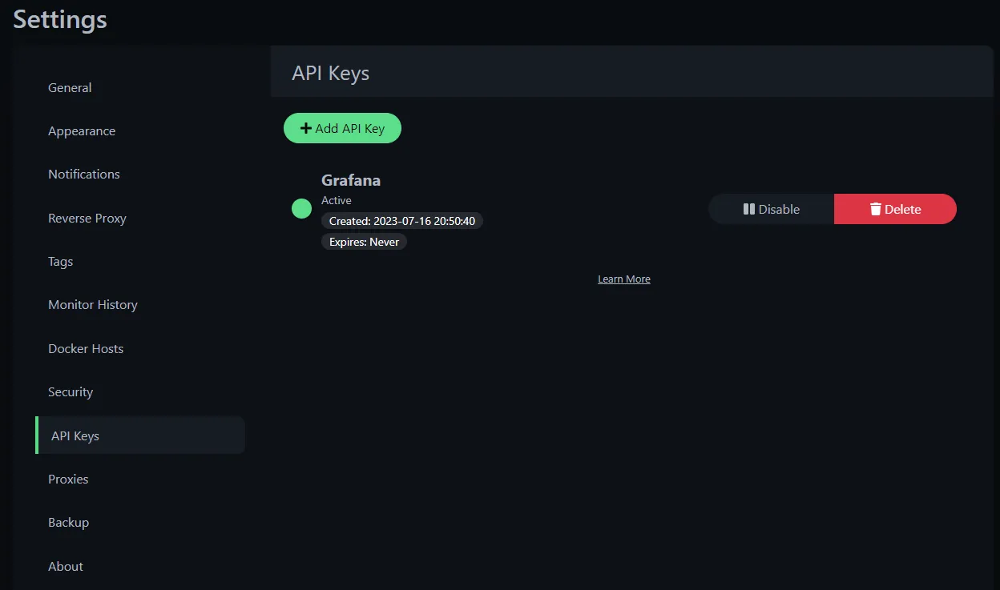
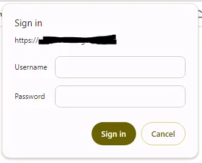
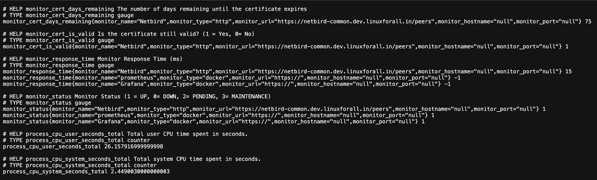
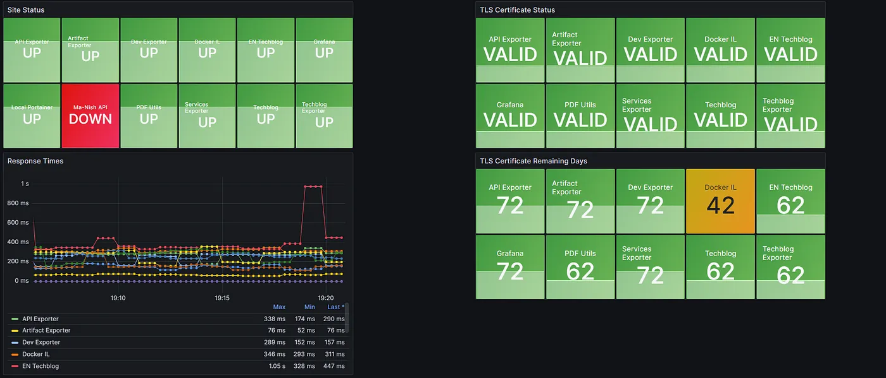

🚀 Uptime-Kuma Deployment Guide
🎯 Objective
Uptime Kuma is an easy-to-use self-hosted monitoring tool.
📋 Prerequisites
- Docker and Docker Compose installed (Compose v2 recommended). Upgrade instructions can be found here.
- A host with at least 1 CPU core and 1 GB of RAM.
- Basic understanding of Docker commands.
⭐ Features
- Monitoring uptime for HTTP(s), TCP, Ping, DNS Records, Docker Containers, and more.
- Fancy, reactive, fast UI/UX.
- Notifications via Telegram, Discord, Gotify, Slack, and over 90 notification services. Click here for the full list.
- 20-second intervals.
- Multi Languages.
- Multiple status pages.
- Map status pages to specific domains.
- Ping chart, certificate info, proxy support, and 2FA support.
⚙️ Setup Instructions
mkdir uptime-kuma
vim docker-compose.yaml
services:
uptime-kuma:
container_name: uptime-kuma
hostname: uptime-kuma
image: louislam/uptime-kuma:latest
network_mode: "host"
volumes:
- uptime-kuma:/app/data
restart: always
volumes:
uptime-kuma:
Warning: File systems like NFS (Network File System) are NOT supported.
Real-time Uptime Monitoring with Uptime Kuma and Grafana
Introduction
Integrating Uptime Kuma monitoring into your Grafana dashboard offers a powerful synergy...
Prerequisites
- Uptime Kuma Installed and Running.
- Grafana Installed and Configured.
- Access Credentials.

Prometheus and Grafana Configuration
Step 1: Verify Metrics Access
https://<hostip>:3001/metrics


Step 2: Configure Prometheus Scraper
- job_name: "uptime Kuma"
scrape_interval: 30s
static_configs:
- targets: ["192.168.0.185:3001"]
Step 3: Setting up Grafana Dashboard
Grafana allows you to import dashboards using JSON files.
